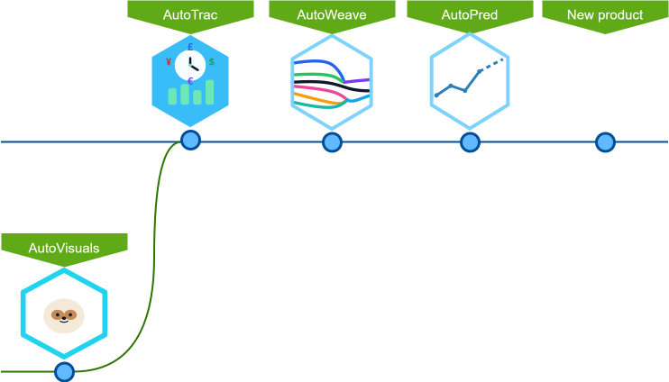

AutoWeave

Real-world organisations operate with fragmented, inconsistent data.
We apply hybrid intelligence — combining automated transformation, structured merge logic, domain context, and human checkpoints — to turn operational data into reliable, analysis-ready outputs.
The result is a transparent, repeatable data pipeline that supports confident decisions without relying on opaque automation.
Products suite

AutoTrac is a portable application that helps freelancers and small teams understand where their time and income actually go.
AutoWeave is a web application that helps small businesses bring scattered operational data together and prepare it for reliable analysis.
AutoPred is a web application that enables individuals and small teams to interpret their historical data and plan ahead with greater confidence.
AutoVisuals is a pipeline that helps creators and teams produce consistent, high-quality visual assets at scale.
Find the full list of products and details at Sloxen™ Products Hub